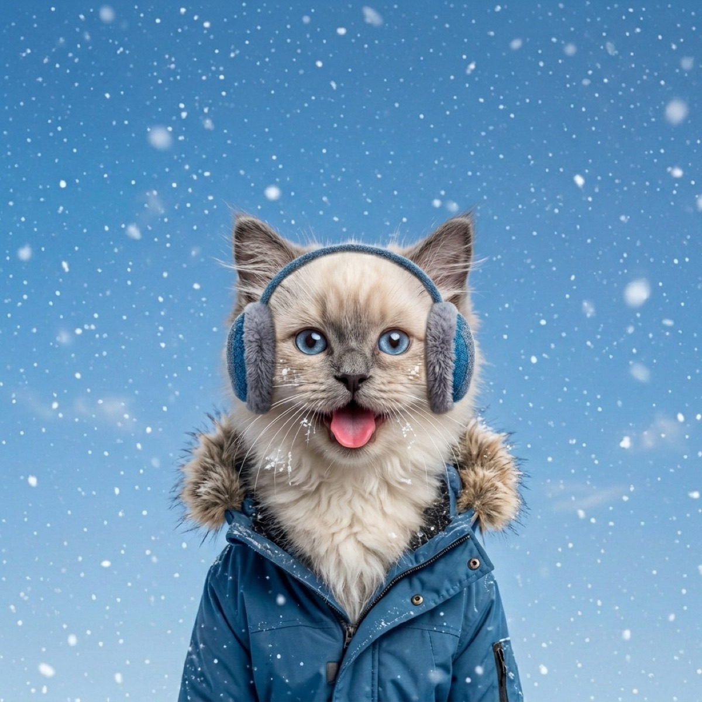

Frostbite in Dogs and Cats: Signs, Treatment, Prevention
Frostbite is sneaky. It hits the parts of your pet you are least likely to check, it often does not show its full damage for days, and the instinctive first aid (rubbing, hot water) makes it worse. Here is how to spot it, treat it, and never see it in the first place.
Where frostbite strikes first
When a body gets cold, it protects the core by pulling blood away from the edges. That triage saves the vital organs but leaves the extremities with less warm blood flowing through them. According to VCA Animal Hospitals' guide to frostbite in dogs, the paws, ears, and tail are the most commonly affected spots, and the risk starts once temperatures drop below freezing, especially in wind or wet conditions.
Cats are not exempt. Outdoor and indoor-outdoor cats regularly lose ear tips to hard freezes, and VCA's companion guide to frostbite in cats lists the same danger zones: ears, tail, and toes. If a cat in your neighborhood shelters outdoors in winter, its ears are the canary in the coal mine.
What frostbite looks like, stage by stage
Frostbite evolves, which is why a paw that looked fine on Tuesday can look alarming on Friday.
- Early: the skin turns pale, gray, or bluish and feels cold and firm to the touch. The area may be painful when you press it, and ice may cling to the fur.
- During rewarming: as blood returns, the tissue often flushes red, swells, and becomes genuinely painful. Small blisters can appear. This stage looks worse before it looks better.
- Severe or late: the skin darkens toward black over days as damaged tissue dies. It may shrivel, harden, or eventually slough off. Severely frostbitten areas can become infected and sometimes require surgical removal.
Because the full extent of the damage can take days to declare itself, any suspected frostbite deserves a vet visit even if it looks minor at first.

First aid: the dos and don'ts
If you suspect frostbite, your job is gentle rewarming on the way to professional care.
- Do get your pet somewhere warm and dry immediately, and wrap them in dry towels or blankets to bring up their core temperature.
- Do rewarm the affected area with lukewarm water, around 100 to 108F. It should feel comfortable on your own hand. Soak or compress for about 20 minutes.
- Do pat dry gently afterward and keep your pet warm during the trip to the vet.
- Don't rub or massage the area. Frozen tissue is full of ice crystals, and friction shreds it from the inside.
- Don't use hot water, heating pads, or hair dryers. Numb tissue cannot feel a burn happening.
- Don't rewarm at all if you cannot keep the area warm, since thawing and refreezing does more damage than staying frozen a little longer.
- Don't give pain medication unless your vet specifically tells you to. Many human painkillers are toxic to dogs and cats.
The hypothermia overlap
Frostbite rarely travels alone. The same conditions that freeze an ear tip also drag down core body temperature, and a pet cold enough for frostbite is often hypothermic too. Watch for hard shivering (or shivering that stops while the pet is still cold), lethargy, stumbling, and shallow breathing. Treat the whole animal first: warm the body, then worry about the ear. The AVMA's cold weather safety guidance is blunt on this point: if you notice signs of hypothermia or frostbite, contact your veterinarian right away.
Prevention: the honest thresholds
Frostbite prevention is mostly a scheduling problem. Below about 20F, keep outings short and purposeful for every dog. Once you factor in wind, the effective temperature can be far lower than the thermometer says, which is why we wrote a whole guide to wind chill and dogs. A few practical rules:
- Shorten, don't skip. Several brief potty breaks beat one long frozen march. Know how cold is too cold for your dog and plan around it.
- Keep them dry. Wet fur loses its insulation, and damp paws freeze faster. Towel off snow between outings.
- Layer up the vulnerable. Small, thin-coated, very young, and senior dogs should wear insulation in serious cold. See our picks for the best dog winter coats.
- Bring cats inside. During hard freezes, there is no outdoor shelter that fully protects ear tips.
The easiest habit is simply checking the real feels-like number before you clip the leash. WeatherPets puts that front and center, with your own pet delivering the morning report, so a dangerous cold snap never catches you at the door.